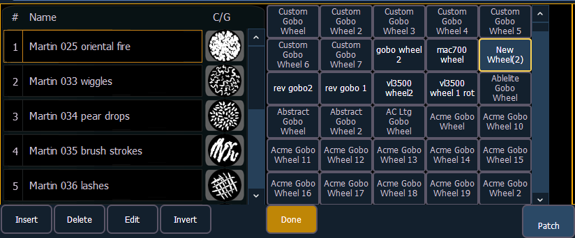
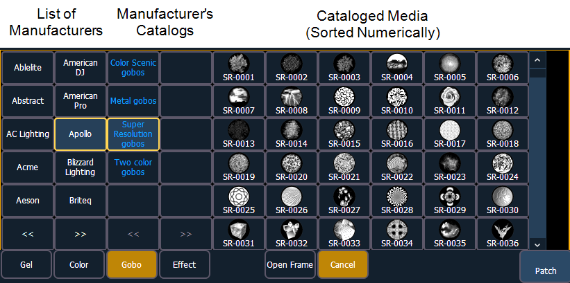

If a copy has been made of an existing scroll or wheel, the copied scroll or wheel will display as {New Wheel n} before the standard manufacturer offerings. The frame list will include an exact duplicate of the copied selection.

To make a change to a frame, first select the frame then press {Edit} or click the gray box in the C/G column to display the media selection. Or you can insert a new frame above a selected frame using the {Insert} softkey.
For example, to insert a new frame in between existing frames 2 and 3, select frame 3 and press the {Insert} key. The media selection will display.

The media selection includes the following softkeys:
When a manufacturer is selected from the list, the catalog selection changes to display only the selected manufacturer’s offerings. When a specific catalog is selected, the selected media will display.
When you make a media selection, the display returns to the new wheel frame list where additional frames can be edited in the scroll or wheel.